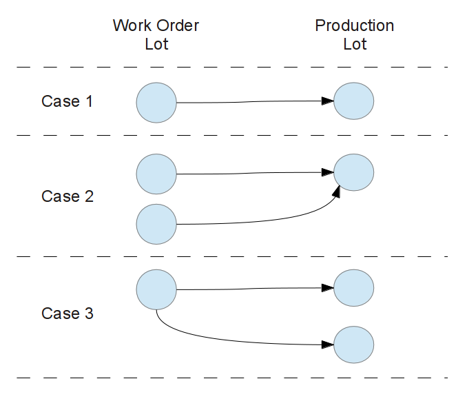

The mrp_workorder_lot module holds new work order lot concepts to split work orders taking into acccount the workcenters product capacity for those workcenters related to the manufacturing order routing operations.
This module adds two features to the mrp module.
First , create a new model named Work Orders Lots (WOL) that represents a block of Work Orders to be accomplished. The usual behavior in OpenERP when a Manufacturing Order is confirmed is generating automatically the Work Orders, one for every operation provided by the Routing set in the Manufacturing Order form. This module changes this behavior by creating not Work Orders per se but creating Work Order Lots. Every Work Order Lot holds a set of Work Orders needed to achieve every routing operation.
The regular process to create the Work Orders has been modified too, instead of creating one Work Order by every routing operation, it also takes into account the product capacity in every relevant workcenters (workcenters related to the current routing operations) and the product quantities predisposed in every routing operation. This way a work order for a routing operation will be split in N pieces to fulfill the workcenter capacity condition like creating a batch procedure. For example:
Manufacturing Order:
Product: French Fries
Qty to produce: 70 Units
Raw Material: 1 kg Potatoes to produce 1 unit of French Fries
In total 70 kgs of potatoes to process.
Routing Operations for French Fries:
1. Clean potatoes at Dishwasher workcenter
2. Peel potatoes at Table workcenter
3. Nibble potatoes at Grinder Machine workcenter
4. Fry potatoes at Stove workcenter
Workcenter Capacities:
Dishwasher: 40 kgs of Potatoes
Grinder Machine: 20 kgs of Potatoes
Stove: 30 kgs of Potatoes
Table: 300 kgs of Potatoes
For this case the bootle neck for workcenter capacity is in the Grinder
Machine workcenter for a maximum of 20 kgs of Potatoes. Knowing that we
need to process 70 kg of potatoes then it is necessary to create four work
order lots: three of 20 kg and one for 10 kg of potatoes.
This new way to automatically create work order lots will also create as many work orders as needed to respect the workcenter capacity. However this capacity can be measured in two different criteria:
Avoid Production Bottleneck: Will create the batch work orders taking into account the minimum capacity of all workcenter maximun capacities (Like the example above).
Maximize Workcenter Productivity / Minimizing Production Cost: For every workcenter will create a batch of works orders that always explotes the product capacity of the workcenter:
In this case will create:
- Two work order Lots for operation 1
(one Lot of 40 kg and one of 30 kg)
- Four work order Lots for operation 2
(three Lots of 20 kg and one of 10 kg)
- Tree work order Lots for operation 3
(two Lots of 30 kg and one of 10 Kg)
- A work order lot of 70 Kg for operation 4 (300 Kg > 70 Kg)
.
Note : The second criterion Maximize Workcenter Productivity / Minimizing Production Cost basis is not yet fully implemented but is a work in process.
This criterion needs to be set by the user. The default is Avoid Production Bottleneck option. To change this criterion set the Production Batch Process Type field either go to Settings Menu > Companies Sidebar Section > Companies Menu > (Select a Company from the list) > In Configuration Tab > At Logistics Section or go to Settings Menu > Configuration Sidebar Section > Manufacturing Menu > Manufacturing Order Section > Planning Section .
A Work Order Lot ( WOL ) is a new model that manage the work orders by a set of this elements calling with the name of Lot.
This Lot is associated to the Manufacturing Order and its creation is automatic by taking into account the workcenter products capaicty boottle neck in a routing.
Second , With the new concept of Work Order Lots we are attaching the paradigm of consuming raw material in lots instead of consuming it in a swept. In order to achieve this feature we have integrated the MRP Consume Produce module to manage in a more real way the production processes. These consume and produce processes have been adapted to manage the Work Order Lots instead of raw material per se. This functionality renders to be helpful because in real life the processes did not happen all at once.
Note : The MRP Consume Produce module ( mrp_consume_produce ) can be found in lp:~vauxoo/addons-vauxoo/7.0
Case 1: one2one relationship. One work order lot produce one production lot.
Case 2: many2one relationship. More that one work order lot produce one production lot.
Case 3: one2many relationship. One work order lot produce more the one production lots.
Módulos OpenERP para manejo de nómina
Note
This module only implements the case 1 of produce process with work order lots.
If you install this module you need to active some settings:
At Settings > Configuration > Warehouse > Traceability active next options to show the product serial numbers:
At Settings > Configuration > Warehouse > Location & Warehouse active this options:
At Settings > Configuration > Manufacturing > Planning active this options:
At Users Settings Menu > Users Sidebar Section > Users Menu > (Select a User) > User Form Access Rights Tab > Technical Settings Section active the next options to show Workcenter and Routing menu, to active the groups permission to invidually consume and produce:
It agregate a 'product lines' model that contain information of the compatible products for the workcenters, indicating the max capacity that product that can be recive in the workcenter.
Create a Manufacturing Order with its need fields.
Note
the product associated to your Manufacturing Order need to have a routing associated
Confirm the recently created Manufacturing Order.
Change Manufacturing Order State to Production Started
Active the Work Order Lots by clicking the Consumed button and fillin the wizard required fields.
Go to Manufacturing > Planning > Work Orders by Active Lot and start to consume an active Work Order Lot by clicking its Consume button (at the kaban card of the work order lot).
Now you need to process the the Work Orders in your Work Order Lot. For that you need to get every work order in your lot to a 'Finish' state. This will trigger a change to the Work Order Lot to Ready to Finish state.
At youre Manufacturing Order you need to click in the Products Produced button and fill in the required fields and finalize clicking the Products Produced button. This will set the Work Order Lot form Ready to Finish state to Done state indicating that the Work Order Lot have been Finished and will create the move of the Manufacturing Order final product that remains in the Manufacturing Order Form > Finished Products Page > Produced Products section There you will see the complete information of the current produce product.